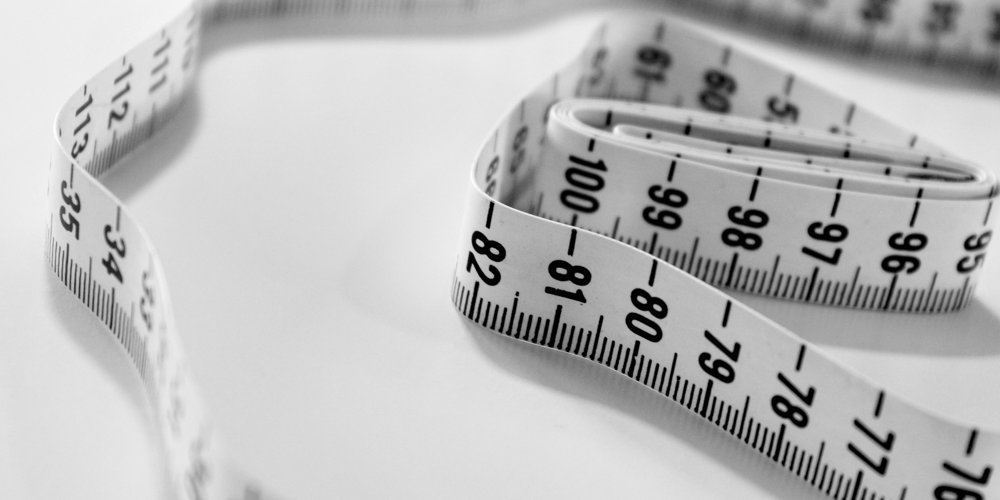
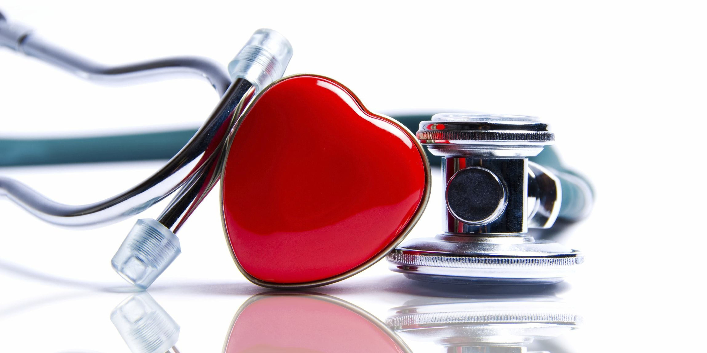
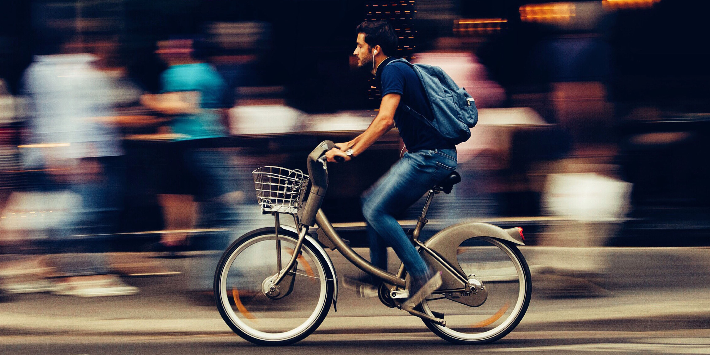
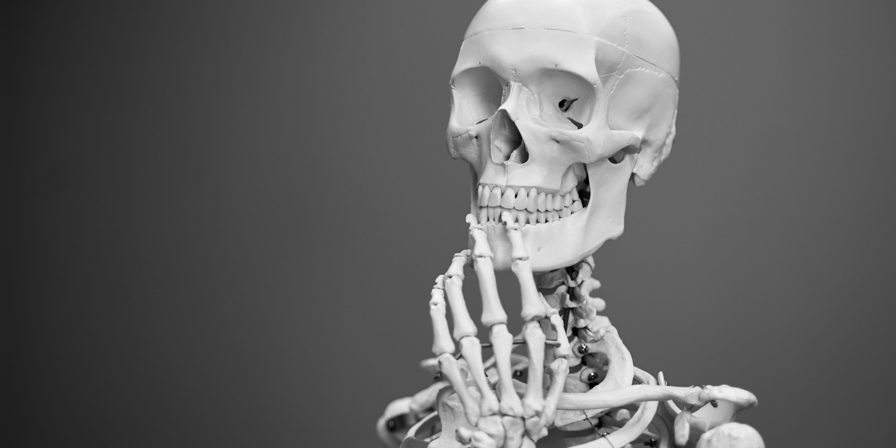
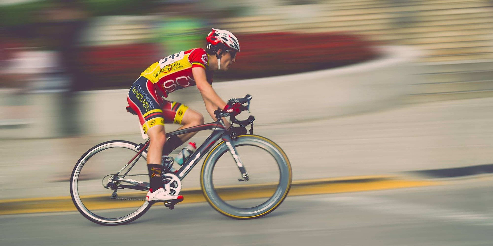
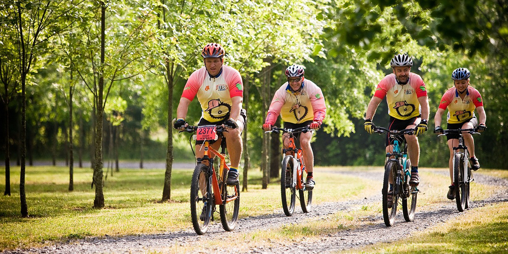

We hear all over the news of the dangers spending most of our days siting down, and the need to get up an exercise. Regular cycling to get around is an easy way to work regular exercise into a busy schedule. And regular exercise has countless benefits past being fit and healthy. It can help protect you from many diseases including; obesity, cancer, mental illness, diabetes and arthritis.
Cycling is a good way to control or reduce weight, as it raises your metabolic rate, builds muscle and burns body fat. If you’re trying to lose weight, cycling must be combined with a healthy eating plan. Cycling is a comfortable form of exercise and you can change the time and intensity – it can be built up slowly and varied to suit you.Research suggests you should be burning at least 8,400 kilojoules (about 2,000 calories) a week through exercise. Steady cycling burns about 1,200 kilojoules (about 300 calories) per hour. If you cycle twice a day, the kilojoules burnt soon add up. British research shows that a half-hour bike ride every day will burn nearly five kilograms of fat over a year.
Cardiovascular diseases include stroke, high blood pressure and heart attack. Regular cycling stimulates and improves your heart, lungs and circulation, reducing your risk of cardiovascular diseases. Cycling strengthens your heart muscles, lowers resting pulse and reduces blood fat levels. Research also shows that people who cycle to work have two to three times less exposure to pollution than car commuters, so their lung function is improved. A Danish study conducted over 14 years with 30,000 people aged 20 to 93 years found that regular cycling protected people from heart disease.
Many researchers have studied the relationship between exercise and cancer, especially colon and breast cancer. Research has shown that if you cycle, the chance of bowel cancer is reduced. Some evidence suggests that regular cycling reduces the risk of breast cancer.
The rate of type 2 diabetes is increasing and is a serious public health concern. Lack of physical activity is thought to be a major reason why people develop this condition. Large-scale research in Finland found that people who cycled for more than 30 minutes per day had a 40 per cent lower risk of developing diabetes.
Cycling improves strength, balance and coordination. It may also help to prevent falls and fractures. Riding a bike is an ideal form of exercise if you have osteoarthritis, because it is a low-impact exercise that places little stress on joints.Cycling does not specifically help osteoporosis (bone-thinning disease) because it is not a weight-bearing exercise.
The resistance element of cycling means that it doesn’t just burn fat: it also builds muscle – particularly around the glutes, hamstrings, quads, and calves. Muscle is leaner than fat, and people with a higher percentage of muscle burn more calories even when sedentary
Mental health conditions such as depression, stress and anxiety can be reduced by regular bike riding. This is due to the effects of the exercise itself and because of the enjoyment that riding a bike can bring.
